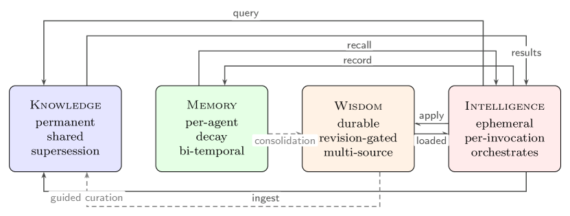

11email: michael.roynard@proton.me
The Missing Knowledge Layer in Cognitive Architectures for AI Agents
Abstract
The two most influential cognitive architecture frameworks for AI agents, CoALA [34] and JEPA [17], both lack an explicit Knowledge layer with its own persistence semantics. This gap produces a category error: systems apply cognitive decay to factual claims, or treat facts and experiences with identical update mechanics. We survey persistence semantics across existing memory systems and identify eight convergence points, from Karpathy’s LLM Knowledge Base [15] to the BEAM benchmark’s near-zero contradiction-resolution scores [35], all pointing to related architectural gaps. We propose a four-layer decomposition (Knowledge, Memory, Wisdom, Intelligence) where each layer has fundamentally different persistence semantics: indefinite supersession, Ebbinghaus decay, evidence-gated revision, and ephemeral inference respectively. Companion implementations in Python and Rust demonstrate the architectural separation is feasible. We borrow terminology from cognitive science as a useful analogy (the Knowledge/Memory distinction echoes Tulving’s trichotomy), but our layers are engineering constructs justified by persistence-semantics requirements, not by neural architecture. We argue that these distinctions demand distinct persistence semantics in engineering implementations, and that no current framework or system provides this.
Keywords:
Cognitive architecture AI agents Memory systems Knowledge representation Persistence semantics LLM agents1 Introduction
The field of AI agent memory has produced a remarkable proliferation of systems, from graph-augmented vector stores [31, 8], OS-inspired virtual context managers [28], unified KV+vector+graph engines [1], and self-organizing memory networks [38], all attempting to give large language models persistent state that survives beyond the context window. We argue that the majority of these systems share a fundamental category error: they conflate knowledge with memory, applying cognitive decay to factual claims that are not subject to forgetting.
Let us consider NornicDB [25], a graph and vector database targeting AI agents. It implements a three-tier cognitive decay model: episodic memories receive a 7-day half-life, semantic memories a 69-day half-life, and procedural memories a 693-day half-life. The intent is biologically inspired. However, a paper’s findings do not become less true after 69 days. A relationship between two concepts does not fade after a calendar month. What decays is the agent’s attentional relevance to the information (a memory concern, not a knowledge concern). This system conflates “I have not accessed this recently” with “this is less valuable,” and those are categorically different propositions.
Indeed, the conflation is pervasive. Mem0 [8] applies identical CRUD operations to facts and experiences. Signet [24] builds a sophisticated entity-aspect-attribute graph with partial supersession but applies uniform decay to all content types. Ori Mnemos [27] implements three-zone decay rates but stores all data types in one graph without formal layer separation. The cost of this conflation is twofold: systems either forget what they should remember (NornicDB applying storage-level decay to permanent facts) or remember what they should forget (Hindsight [16] persisting everything forever without decay).
This category error is not confined to production systems. The two most influential cognitive architecture frameworks for AI agents both exhibit it. CoALA [34] identifies “semantic memory” but does not distinguish its persistence semantics from episodic memory. JEPA [17] has no Knowledge layer at all.
The gap is increasingly visible to practitioners. In April 2026, six independent community voices articulated the same diagnosis within a single week on Reddit, spanning three distinct concern tiers. At the implementer tier, the author of a compile-upfront knowledge wiki acknowledged that “the compiled layer can drift and start feeling stale,” motivating the need for a Memory layer alongside Knowledge.11 1 r/Rag, April 2026, u/Astro-Han. A top-voted reply to a separate knowledge-compilation thread argued: “you need to add a memory layer to your setup, whether it be a bunch of MEMORY.md files or something fancier. The two work in tandem.”22 2 r/Rag, April 2026, u/schneeble_schnobble (+13 upvotes). At the architect tier, a practitioner stated the design principle concisely: “treat ingestion and interpretation as probabilistic, but keep storage, state transitions, and supersession deterministic […] ontology rules, temporal semantics, and explicit update policies decide how new information affects existing knowledge.”33 3 r/Rag, April 2026, u/JonnyJF. At the governance tier, an enterprise knowledge architect framed the problem as: “what is allowed to compound, what is only a projection, and what remains the source of record?” with the invariant that “projections never silently become the truth they summarize.”44 4 r/Rag, April 2026, anonymous OP. These are anecdotal signals, not peer-reviewed evidence, but their density and independence suggest that the architectural gap is recognizable by practitioners across experience levels.
We analyze the framework gaps (section 2), propose a four-layer decomposition with distinct persistence semantics per layer (section 3), present convergence evidence from 9 independent sources (section 4), briefly describe companion implementations (section 5), and discuss limitations and future work (section 6).
2 Background
2.1 Cognitive Science Foundations
The four-layer decomposition we propose is an engineering construct, not a neuroscience model. Nevertheless, it draws on well-established dissociations in cognitive psychology that motivate treating different kinds of persistent state differently. [36] introduced the canonical episodic-versus-semantic memory distinction: semantic memory stores general world knowledge “not tied to a specific episode,” while episodic memory is event-bound with sensory, temporal, and spatial anchoring. This dissociation is the psychological foundation for our Knowledge/Memory split. [9] demonstrated the procedural-versus-declarative dissociation through amnesia studies: patients with damaged hippocampi can learn new motor skills while being unable to form new declarative memories, establishing that “knowing how” and “knowing that” are architecturally distinct. This validates treating Wisdom (procedural, action-shaping) as a separate layer from Knowledge and Memory (both declarative). [5] reframed forgetting as an adaptive retrieval-inhibition mechanism rather than a failure, the position our Memory layer’s Ebbinghaus decay adopts. [23] introduced metamemory (knowledge about one’s own memory processes), which maps onto the Wisdom layer’s self-referential capability. [20] synthesized the prospective memory literature, distinguishing time-based from event-based intention triggering, both of which our Memory layer addresses. These references are the same cognitive-science foundations that [6] cite in their recent DeepMind Cognitive Framework, providing independent anchoring for our architectural choices.
2.2 CoALA
CoALA [34] provides the most comprehensive taxonomy of cognitive capabilities for language agents, decomposing agent cognition into working memory, episodic memory, semantic memory, and procedural memory, directly inspired by Tulving’s trichotomy [13, 14]. The framework has become the standard reference for reasoning about agent memory architecture.
However, CoALA does not distinguish the persistence semantics of semantic memory from episodic memory. Both are classified as “long-term memory” with no formal difference in update mechanism, ownership scope, or decay behavior. Under CoALA, the fact “LoRA achieves 95% of full fine-tuning quality” and the experience “user corrected me about LoRA yesterday” inhabit the same architectural category. Yet the first is a permanent claim that should be superseded (not forgotten) when newer evidence arrives, while the second is an ephemeral experience that should decay unless consolidated into a durable behavioral pattern. Simply said, CoALA’s taxonomy correctly names the distinction (semantic vs. episodic) but does not operationalize it with different persistence mechanics.
2.3 JEPA
LeCun’s “A Path Towards Autonomous Machine Intelligence” [17] proposes a six-module cognitive architecture (Perception, World Model, Cost Module, Short-Term Memory, Actor, and Configurator) centered on the Joint Embedding Predictive Architecture. The paper is among the most cited position papers in recent AI research.
JEPA has no Knowledge layer. Factual knowledge about the world is either (a) compressed into World Model weights (lossy, unattributable, and requiring retraining to update) or (b) held transiently in the Short-Term Memory buffer (ephemeral, lost on clearance). There is no persistent, shared, source-attributed factual store. The architecture provides no mechanism for supersession (recording that a new claim improves upon an old one while preserving both), no provenance tracking, and no shared factual store across agents.
Independent critical reviews strengthen this analysis. [18] identifies that JEPA’s configurator is underspecified, the System 1/System 2 mapping is incorrect, and Hierarchical JEPA is incompatible with predictive coding. [4] shows that memory is load-bearing for JEPA’s critic: the Cost Module is “trained from past states and subsequent intrinsic cost, retrieved from memory.” The critic cannot evaluate predicted states without access to historical experience, yet JEPA’s Short-Term Memory is an unstructured buffer with no decay policy, no temporal indexing, and no consolidation mechanism.
It is important to note that JEPA’s stated scope is learning architecture (self-supervised learning via joint embeddings), not agent memory infrastructure. The gap we identify becomes relevant when JEPA-like architectures are deployed as cognitive cores for persistent agents: facts about the world need a home that is neither lossy weight compression nor ephemeral buffer state. CoALA at least identifies semantic memory as a distinct category, even though it does not separate its persistence semantics. JEPA does not address persistence at all, which is appropriate for its scope but insufficient for agent deployment.
3 The Four-Layer Decomposition
We propose that the cognitive substrate of AI agents decomposes into four layers, each with fundamentally different persistence semantics, update mechanisms, and ownership scopes (table 1, fig. 1).
| Layer | Definition | Persistence | Update | Scope |
| Knowledge | What is true | Indefinite; supersession | Append-only + provenance | Shared |
| Memory | What happened | Ebbinghaus decay | Bi-temporal event sourcing | Per-agent |
| Wisdom | What works | Durable; revision-gated | Evidence-threshold review | Multi-source |
| Intelligence | Capacity to reason | Ephemeral (inference-time) | N/A | Per-invocation |

Knowledge: “what is true about the world.”
Knowledge is factual, structural, and permanent. Facts do not expire; they get superseded by newer evidence, which is a qualitatively different operation from forgetting. Let us consider a research agent that has ingested Paper A: “LoRA achieves 95% of full fine-tuning quality at 0.1% parameters” and later Paper B: “DoRA achieves 97% at 0.08% parameters.” In a system that conflates knowledge and memory, Paper A’s claim would decay over time, losing retrievability simply because days have elapsed. However, Paper A’s finding has not become false. The correct operation is supersession: recording the relationship between the two claims and marking one as improved upon, while preserving both for provenance and historical queries. Knowledge is shared across agents (any agent querying the knowledge base sees the same facts) and carries provenance: who said it, when, based on what evidence.
Memory: “what happened, what I was told.”
Memory is experiential, per-agent, and ephemeral by default. It decays naturally following a forgetting curve [37] unless consolidated. We use Ebbinghaus decay as a simplifying approximation; the cognitive forgetting literature is considerably richer (interference-based forgetting, reconsolidation, sleep-dependent consolidation). The architectural point is that Memory requires some decay mechanism, while Knowledge requires none. One-time observations should not permanently consume retrieval bandwidth, while recurring patterns should accumulate enough reinforcement to survive forgetting. Also, memory is context-scoped: memory about project A should not bleed into project B. Every memory operation produces an immutable event in an append-only event log, with four timestamps following Graphiti’s bi-temporal model [31]: system-created, system-expired, real-world-valid, and real-world-invalid. This distinction between “when did we learn this” and “when was this actually true” is essential for resolving temporal conflicts.
Wisdom: “what works, learned from experience.”
Wisdom consists of pre-compiled behavioral patterns, that is, generalized lessons extracted from experience. The primary criterion that distinguishes Wisdom from Knowledge is the update mechanism, not the content type. Knowledge updates via supersession: when a new claim contradicts an old one, both are preserved and linked, with the old claim marked as superseded. Wisdom updates via evidence-gated revision: a behavioral directive can only be promoted or modified when structured evidence (corroboration count, session span, contradiction absence) crosses a threshold. These are different storage operations that require different implementations. Content type serves as a secondary heuristic: verifiable, source-attributed claims default to Knowledge, while behavioral directives derived from experience default to Wisdom.
For the sake of clarity, let us consider four boundary cases. (1) “User prefers dark mode” is Knowledge (a verifiable fact, updated by supersession if the preference changes). (2) “When the user asks about UI, check theme preferences first” is Wisdom (a behavioral directive, updated by evidence-gated revision). (3) “The user mentioned dark mode yesterday” is Memory (an ephemeral observation that should decay unless the pattern recurs). (4) “Gradient clipping above 1.0 destabilizes training on ResNet-50” is ambiguous: it is both a verifiable empirical finding (Knowledge) and a potential behavioral directive (Wisdom). We resolve this by noting that the fact belongs in Knowledge (with supersession if new evidence contradicts it), while the derived directive (“set gradient clipping to 1.0 or below”) belongs in Wisdom (with evidence-gated revision). The same observation can produce entries in both layers with different persistence semantics, and this is by design: the fact persists indefinitely, while the directive can be revised when the practitioner’s context changes. An alternative design would collapse Knowledge and Wisdom into a single layer with a stability-tier field and a source-attribution flag. This is a viable simplification, but it forces a single update mechanism to handle both supersession and evidence-gated revision, which we argue are semantically distinct operations.
Wisdom does not decay: “never store secrets in git” does not become less wise over time. However, wisdom updates via explicit revision, not gradual fading. When a behavioral pattern is superseded (e.g., a user changes their preferred test framework), the old pattern is retired with provenance and the new pattern is installed.
Concretely, revision-gating assigns each wisdom entry a stability tier based on corroborating evidence: entries derived from a single episode are predictions (free to churn), entries corroborated across three or more independent sessions stabilize as core patterns, and entries that persist without contradiction across ten or more consolidation cycles earn anchor status and resist modification. These thresholds are configurable and empirically motivated by BaseLayer’s finding that 20% of facts produces equivalent behavioral fidelity to 100% [3]. This tiered model is also motivated by [7], who show that RLHF-trained models affirm user behavior 50% more than humans, and users rate sycophantic AI 9–15% higher even after disclosure. Gating on approval alone would let sycophantic models promote agreeable-but-incorrect patterns. Gating on structured evidence prevents this.
Intelligence: “the capacity to reason, plan, and act.”
Intelligence is ephemeral. It exists only at inference time and leaves no direct trace; its effects persist only through the other three layers. Intelligence orchestrates: it queries knowledge, recalls memory, applies wisdom, uses tools, and synthesizes a response. Two simultaneous sessions share no intelligence state.
The organizing principle.
The key design litmus that emerges from this decomposition is the distinction between storage-level and query-time properties. Recency is a query-time heuristic (the Intelligence layer can boost recent results when recency matters). Decay is a storage-level mechanism (the Memory layer applies Ebbinghaus forgetting to experiential facts). Confusing the two produces systems like NornicDB where knowledge is subjected to storage-level decay when recency should be a query-time filter. A system that treats all four layers with identical storage and retrieval semantics will predictably mishandle at least three of them.
4 Convergence Evidence
The four-layer decomposition is not merely a theoretical proposal. Multiple independent sources, spanning academic benchmarks, production systems, industrial-lab reports, and practitioner projects, converge on related architectural gaps without coordinating (table 2). We note that these sources share intellectual heritage (several trace to Tulving’s trichotomy), so the convergence is downstream of common ancestors rather than fully independent. Nevertheless, the pattern is suggestive: each source independently discovers that flat persistence semantics are insufficient, even if none proposes the same four-layer resolution we do.
| Source | What they found | What’s missing |
| Published / peer-reviewed | ||
| DeepMind Cognitive Framework [6] | 10-faculty taxonomy; Working Memory under Executive Functions, not Memory; memory/learning distinction | Taxonomy only; no persistence semantics, no implementation |
| Hindsight [16] | 5-level data hierarchy (entities facts observations mental models), BEAM SOTA 64.1%/10M tokens | No forgetting, no decay, no bi-temporal, no supersession |
| BEAM [35] | Contradiction resolution , temporal reasoning across all systems at 10M tokens | Reveals gap, does not propose architectural solution |
| Gulli & Sauco [11] | Google CTO reference (424p, Springer): two-tier memory (context + vector store) | No temporal model, no forgetting, no Wisdom |
| Industry / production systems | ||
| Karpathy LLM KB [15] | Knowledge layer: compilation, querying, maintenance loops (April 2026) | No Memory, no Wisdom, no temporal semantics |
| Claude Code [3] | 4-type taxonomy (user/feedback/project/reference), 4-stage consolidation pipeline | No supersession, no temporal validity, no structured facts |
| Mengram [2] | Independent Tulving trichotomy: separate pipelines for semantic/episodic/procedural | No persistence semantics per type |
| Mastra OM [19] | LongMemEval SOTA (94.87%); multi-session ceiling at 87.2% across all systems | No cross-session persistence, no supersession, no layer separation |
| Google AOMA [33] | LLM-driven 30-min consolidation loops generating meta-insights from raw memories | No temporal model, no forgetting, no layer separation, O() retrieval |
The pattern across these convergence points is consistent: teams and practitioners independently discover the need for typed cognitive data with different persistence semantics, but no existing system provides the full decomposition. Karpathy builds a Knowledge layer while missing the other three. Hindsight builds the most sophisticated retrieval system (BEAM SOTA at 64.1%) yet persists everything forever with no decay and no supersession. Claude Code’s 4-type taxonomy partially distinguishes Knowledge from Memory but stores both as markdown blobs with identical persistence semantics. Also, two recent systems independently validate consolidation as a first-class operation: Mastra’s Observational Memory [19] achieves LongMemEval SOTA via compression rather than retrieval, but hits a multi-session ceiling at 87.2% because observations vanish when the session ends (no persistent Memory layer). Google’s Always-On Memory Agent [33] runs 30-minute LLM consolidation loops that generate meta-insights from raw memories, independently converging on the DreamCycle concept we formalize, but without temporal modeling, forgetting, or layer separation.
Furthermore, practitioner communities have independently arrived at similar distinctions. On the r/AIMemory forum, one user unpromptedly distinguished wisdom from memory: “It sounds like you’re describing ‘wisdom’ which is another component alongside memory.”55 5 r/AIMemory, “Memory as a Harness: Turning Execution Into Learning,” March 2026, user avwgtiguy. Another observed that existing benchmarks “test whether a system can find or apply what was said,” not “whether it actually built coherent knowledge.”66 6 r/AIMemory, benchmark discussion thread, March 2026, user PenfieldLabs. See also their LoCoMo audit: https://github.com/dial481/locomo-audit. A third proposed that “memory retrieval should be model-agnostic, and the harness layer handles formatting/routing,” independently validating the consumer trait abstraction.77 7 r/AIMemory, same thread as footnote 1, user Time-Dot-1808. These are anecdotal signals, not peer-reviewed evidence, but they suggest that the gap is recognizable by practitioners without exposure to our framework.
The BEAM benchmark [35] provides the strongest empirical evidence. At 10M tokens (where context stuffing physically cannot work), the abilities where all systems score worst are contradiction resolution (0.05), temporal reasoning (0.12), and knowledge update (0.26–0.39). These are precisely the abilities that require architectural solutions (supersession, bi-temporal modeling) rather than better retrieval. This pattern suggests that persistence semantics, not retrieval quality, is the primary bottleneck.
External validation from DeepMind.
The strongest external validation comes from DeepMind’s Cognitive Framework [6], a 32-page technical report proposing a 10-faculty cognitive taxonomy for measuring progress toward AGI. Their §7.5 Memory subdivides into Semantic, Episodic, Procedural, Prospective, and Forgetting sub-faculties. Crucially, they place Working Memory under §7.8 Executive Functions, not under Memory, on the explicit grounds that “working memory involves the coordination of multiple faculties including memory, attention, and sometimes reasoning.” This independently mirrors our Intelligence-versus-Memory split: DeepMind recognize that the colloquial term “memory” conflates runtime context with durable persistence, and structurally separate them. Their §7.5 opening paragraph states that “learning is focused on the acquisition of new knowledge, whereas memory is concerned with the ability to maintain that knowledge over time […] a failure to update semantic knowledge despite being able to successfully recall already stored knowledge would be considered a failure of learning, while forgetting information over time that was initially successfully learned would be a failure of memory.” This is the category error framed in the same terms as section 1, stated by a first-party industrial lab. The 10-faculty taxonomy compresses onto our four layers via shared persistence semantics: Perception, Generation, Attention, Working Memory, Reasoning, and Problem-Solving collapse to Intelligence (all ephemeral runtime); Semantic Memory maps to Knowledge; Episodic, Prospective, and Forgetting map to Memory; Procedural Memory, Metacognition, and Executive Functions map to Wisdom. This compression is a simplification, not an exact mapping: Attention and Working Memory have distinct properties from Reasoning in DeepMind’s framework, and collapsing six faculties into Intelligence loses granularity that may matter for fine-grained capability evaluation. The “jagged profile” diagnostic [22] complements this: monolithic agent architectures produce uneven cognitive capability distributions precisely because they conflate layers with fundamentally different persistence semantics.
Parallel community convergence (April 2026).
Beyond the practitioner quotes cited above, the April 2026 landscape surfaced several independent systems converging on components of the four-layer thesis without coordinating. rohitg00’s LLM Wiki v2 [32], a gist forking Karpathy’s pattern, independently proposes confidence scoring with time-decay, explicit supersession, type-appropriate Ebbinghaus decay rates, and a four-tier consolidation pipeline, making it the closest informal statement of the thesis. Hermes Agent [26] (Nous Research) ships the closest existing implementation of the Wisdom-layer consolidation loop: procedural skill documents written back from task execution in real time following the agentskills.io open standard, though it lacks a bi-temporal substrate. Semantica [12] and MinnsDB [21] are the closest architectural cousins: both implement bi-temporal knowledge graphs (Semantica with Allen Interval Algebra for deterministic temporal consistency, MinnsDB with WHEN/AS OF query clauses), though neither separates persistence semantics per cognitive type. Frona [10] is the first Rust-language peer, validating the choice of Rust for memory-layer engines. Papr’s schema-policy DSL [29] provides vocabulary directly applicable to the Wisdom revision gate: declarative promotion predicates that decouple graph structure from resolution behavior. None of these systems provides the full four-layer decomposition; each addresses one or two components. The density of convergent work in a single month suggests that the architectural pattern is emerging independently across the community.
Why four layers?
A natural question is whether the decomposition could use fewer or more layers. A three-layer model (dropping Wisdom) would merge behavioral directives with factual knowledge, but these require fundamentally different update mechanics: facts supersede via evidence, while directives require evidence-gated revision with stability tiers. To illustrate the failure mode concretely: in a merged K+W store, a sycophantic pattern (“always agree with the user’s architectural preferences”) could be promoted to anchor status because it is verifiable (the user did consistently prefer this) and source-attributed, bypassing the evidence-gated review that would catch it in a separate Wisdom layer. Conversely, a five-layer model (splitting Knowledge into factual and relational substrates) would add complexity without a corresponding difference in persistence semantics, as both subfactors still require supersession and provenance. The four-layer count is not a priori necessary. It is the minimum decomposition where each layer requires a different persistence mechanism: supersession, decay, revision-gating, and ephemerality respectively. An analogy from human cognition illustrates why merging Knowledge and Wisdom specifically is problematic: a student taking an exam uses consolidated skills (Wisdom, such as how to integrate or solve equations, which do not decay), factual knowledge (Knowledge, such as “Paris is the capital of France,” which supersedes if a capital moves but does not fade), episodic memories (Memory, such as what a teacher said last week, which decays unless rehearsed), and inference-time reasoning (Intelligence, the exam itself, which is ephemeral). Collapsing skills and facts into one layer would require a single update mechanism to handle both “” (permanent, not subject to revision) and “prefer integration by parts for this class of problems” (durable but revisable when better techniques are learned). These are categorically different persistence requirements.
We note that grey literature (blog posts, tweets, GitHub repositories) constitutes a significant fraction of our references. This is an inherent property of the field’s pace: agent memory systems are evolving on a weekly cadence, and many of the most relevant contributions exist only as open-source repositories or practitioner posts. We cite peer-reviewed work where available and flag non-peer-reviewed sources explicitly.
5 Companion Implementations
In order to demonstrate that the four-layer architectural separation is feasible, we contribute two companion implementations that realize the Knowledge and Memory layers respectively.88 8 The Wisdom layer materializes across multiple substrates: model weights (frozen wisdom from training), configuration files (user-curated rules loaded at session start), and promoted behavioral directives (a key-value store with stability-tier metadata and a revision log). Intelligence is the model itself.
knowledge-base
(knowledge-base)99 9 https://github.com/dutiona/knowledge-base: a Python MCP server backed by SQLite with sqlite-vec for vector search and FTS5 for full-text retrieval. It exposes 46 MCP tools covering the full lifecycle (ingestion, structure extraction, entity and relationship management, hybrid search with RRF fusion and stage-2 reranking, and conclusion tracking with supersession). Facts carry provenance metadata and support supersession: old claims are never deleted but linked to their successors. The system passes 338+ tests.
memory-engine
(memory-engine)1010 10 https://github.com/dutiona/memory-engine: a Rust crate using SQLite for persistence, in-process HNSW for vector search, and Petgraph for graph traversal. It implements Ebbinghaus forgetting with configurable half-lives, bi-temporal fact storage (four timestamps per fact), scoped contexts for project isolation, and five consumer traits (EmbeddingProvider, SummaryGenerator, ConflictArbiter, PersistenceClassifier, Reranker) that carry zero network or LLM dependencies, as all intelligence is consumer-provided. The engine also ships first-class prospective memory primitives (list_due, next_due_time, surfaced_at) implementing time-based intention triggering [20], mapping directly onto DeepMind’s §7.5.4 Prospective Memory [6]. The system passes 486 tests.
The architectural separation is the contribution, not the search quality of either system. These implementations demonstrate that Knowledge and Memory can be realized as separate systems with different persistence semantics, different update mechanics, and different ownership models, and that doing so is practical at the library level without requiring heavy infrastructure.
A notable architectural invariant distinguishes both implementations from every system surveyed in section 4: all core operations (decay computation, graph traversal, retrieval fusion, supersession bookkeeping, consolidation scheduling) use deterministic algorithms with zero LLM calls and zero network dependencies. LLM operations (entity extraction, fact validation, wisdom promotion) happen exclusively at the consumer layer, invoked by the calling agent with its own provider. Indeed, every competing system that performs consolidation or structured extraction requires LLM calls inside the memory system itself (Mastra’s Observer/Reflector agents, Google AOMA’s Gemini-based consolidation, claude-mem’s separate Claude session). Our LLM-free engine guarantees predictable latency, bounded memory footprint (5 MB RAM), and offline operation.
Pilot evaluation.
1111 11 Experiment code and data: https://github.com/dutiona/papers-material.In order to test whether the architectural separation changes observable outcomes, we ran a focused pilot on the BEAM benchmark’s 100K-token split [35]. We selected the two ability categories where all systems score worst (contradiction resolution and temporal reasoning) and compared two conditions: typed routing, where an oracle classifier directs queries to knowledge-base (supersession-aware) or memory-engine (bi-temporal) based on the ground-truth BEAM category, and a flat baseline, where the same queries hit a single undifferentiated FTS5 store with no type distinction. Both conditions used the same local model (Gemma 4 26B) for generation and scoring, with 80 questions from 20 conversations per condition (table 3).
| Category | Typed | Flat | |
| Contradiction resolution | 0.500 | 0.394 | +0.106 |
| Temporal reasoning | 0.425 | 0.275 | +0.150 |
| Overall | 0.463 | 0.334 | +0.128 |
Typed routing improves overall accuracy by +0.128 (46.3% vs. 33.4%, bootstrap 95% CI on : , McNemar ). The largest gain is on temporal reasoning (+0.150), where the memory-engine’s bi-temporal filtering surfaces chronologically ordered facts that the flat store returns unordered. Contradiction resolution gains +0.106, as the knowledge-base’s supersession-aware retrieval filters stale claims. Also, a two-conversation comparison with a heuristic keyword-based router (instead of the oracle) reverses the typed advantage (), confirming that routing accuracy is load-bearing: architectural separation helps only when queries reach the correct store.
The pilot has clear limitations: small sample (), two categories only, no ablation separating routing from store semantics, FTS-only retrieval (no vector search), and a local 26B model for both generation and scoring. Nevertheless, the result is directionally consistent with the paper’s thesis: the abilities where flat stores fail worst are precisely those where typed persistence semantics provide measurable improvement.
6 Discussion and Limitations
Why this matters.
Every system that persists information for AI agents must choose how to handle persistence semantics. The choice is often implicit and uniform (identical CRUD for all data types) but it is still a choice, and it produces predictable failures. The four-layer decomposition makes this choice explicit: facts get supersession, experiences get decay, behavioral patterns get evidence-gated revision, and reasoning is ephemeral. Making the choice explicit does not solve every problem in agent memory, but it prevents the category errors that currently plague the field.
The null hypothesis.
The strongest counter-argument to structured external memory comes from the practitioner community: “All you are doing is memory with extra steps and burning huge blocks of context to read all that memory. AI’s don’t improve, no matter what you put on disk.” This objection has two components. First, the empirical claim that external memory does not improve performance is falsified by existing benchmarks: Mastra’s Observational Memory [19] reports 94.87% on LongMemEval where the baseline scores 33% (a near-3 improvement). However, a recent community audit [30] has revealed serious methodological issues: LoCoMo’s answer key is 6.4% factually incorrect, its LLM judge accepts 63% of intentionally wrong answers, and LongMemEval’s per-question context fits in a single window, allowing systems to bypass retrieval entirely. These findings render all prior LongMemEval and LoCoMo scores provisional. Nevertheless, the directional result stands: structured memory outperforms raw context. Mastra is a flat memory store, which raises a follow-up question: if a flat store achieves strong retrieval scores, why do we need layer separation? The answer is that these benchmarks test retrieval accuracy, not persistence correctness. A flat store can retrieve the right fact today, but it cannot handle the case where a fact was superseded yesterday and the old version should still be queryable for provenance. BEAM’s contradiction-resolution scores (0.05 across all systems) measure precisely this capability, and there flat stores fail.
Second, and more importantly, the “extra steps” objection is partially correct, but it is an argument for our architecture, not against it. Indeed, a flat, undifferentiated memory store where facts, preferences, and ephemeral observations use identical semantics is noise with extra steps. Thanks to layer-separated persistence semantics, each retrieval targets the correct substrate: knowledge queries return source-attributed facts, memory queries return decay-aware experiences, and wisdom is pre-loaded at session start without retrieval cost at all.
Relationship to broader frameworks.
table 4 positions the four-layer decomposition against CoALA and JEPA. The key column is “persistence distinction”: CoALA names the Knowledge/Memory boundary but does not operationalize it, while JEPA does not identify it as a concern.
| CoALA | JEPA | Four-Layer | |
| Knowledge | Semantic mem. (no distinct persistence) | In weights (lossy) or buffer (ephemeral) | Supersession + provenance |
| Memory | Episodic mem. (same persistence as semantic) | Short-Term Mem. (unstructured buffer) | Ebbinghaus + bi-temporal |
| Wisdom | Procedural mem. | World Model weights | Revision-gated + evidence |
| Intelligence | Working mem. | Configurator + Actor | Ephemeral orchestration |
| Persistence distinction | Named but not operationalized | Not identified | Explicit per layer |
Limitations.
Despite the theoretical grounding and convergence evidence, this design comes with some limitations. First, this paper is a position paper: the companion implementations demonstrate feasibility, not superiority. We do not present large-scale empirical evaluation on standardized benchmarks, and that is deferred to future work. Second, the convergence evidence includes practitioner community signals (footnotes in section 4) that are not peer-reviewed. We include them as evidence of independent discovery, not as authority. Third, the Knowledge/Wisdom boundary remains a design choice: the same observation can produce entries in both layers (see the gradient-clipping example in section 3), and a single-layer alternative with stability tiers is a viable simplification. Fourth, the four-layer decomposition is a design framework, not a formal model with provable properties. Its value lies in preventing category errors, not in mathematical guarantees.
Future work.
Three directions follow directly. First, scaling the pilot evaluation (table 3) to the full BEAM benchmark at 1M and 10M tokens with a learned router (replacing the oracle classifier), testing whether architectural separation improves contradiction resolution and temporal reasoning scores at scale. Second, a memory-architecture-specific benchmark (MemArch-Bench) that tests supersession correctness, bi-temporal point-in-time accuracy, type-appropriate decay, and context-poisoning resistance, that is, architectural properties that no existing benchmark evaluates [35]. The recent benchmark governance crisis [30], which invalidated direct comparability of LongMemEval and LoCoMo scores across systems, makes this benchmark an urgent infrastructure need for the field. Third, a closed-loop memory-to-wisdom consolidation pipeline (DreamCycle) that promotes recurring patterns from Memory to Wisdom with full provenance tracking.
7 Conclusion
We have identified a missing Knowledge layer in the two most influential cognitive architecture frameworks for AI agents. CoALA names the Knowledge/Memory distinction but does not operationalize it with different persistence semantics. JEPA does not identify it as a concern at all. This gap produces a category error that is pervasive across the field: systems apply cognitive decay to facts, or treat facts and experiences with identical update mechanics. A four-layer decomposition (Knowledge, Memory, Wisdom, Intelligence) with distinct persistence semantics per layer resolves this error. Nine convergence points, from DeepMind’s Cognitive Framework to BEAM’s near-zero contradiction-resolution scores, validate that the gap is widely recognized across industrial-lab reports, published benchmarks, production systems, and practitioner projects. The architectural separation is feasible: companion implementations in Python (338+ tests) and Rust (486 tests) demonstrate it at the library level without heavy infrastructure.
References
- [1] AlbericByte: ArqonDB: Unified KV+vector+graph engine for agent memory. GitHub (2026), https://github.com/AlbericByte/ArqonDB, rust. Causal DAG with temporal edges (uni-temporal validity intervals), state branching, custom LSM-tree + HNSW. Still conflates all cognitive layers into a single “agent state” abstraction.
- [2] alibaizhanov: Mengram: Three-type memory extraction for LLMs. GitHub (2026), independent convergence on Tulving’s trichotomy (semantic/episodic/procedural) with separate extraction pipelines per type.
- [3] Anthropic: Claude code memory architecture. Claude Code v2.1.59+ (2026), six memory subsystems with 4-type taxonomy (user/feedback/project/reference). No supersession, no temporal validity, no structured facts. Most widely deployed AI memory system.
- [4] Bandaru, R.: Deep dive into Yann LeCun’s JEPA. GitHub Pages blog (2024), https://rohitbandaru.github.io/blog/2024/07/01/deep-dive-into-yann-lecuns-jepa.html, identifies that JEPA’s critic is “trained from past states and subsequent intrinsic cost, retrieved from memory” — memory is load-bearing for the critic.
- [5] Bjork, R.A.: Retrieval inhibition as an adaptive mechanism in human memory. In: Roediger, H.L., Craik, F.I.M. (eds.) Varieties of Memory and Consciousness: Essays in Honour of Endel Tulving, pp. 309–330. Lawrence Erlbaum Associates (1989)
- [6] Burnell, R., Yamamori, Y., Firat, O., Olszewska, K., Hughes-Fitt, S., Kelly, O., Galatzer-Levy, I.R., Morris, M.R., Dafoe, A., Snyder, A.M., Goodman, N.D., Botvinick, M., Legg, S.: Measuring progress toward AGI: A cognitive framework. Tech. rep., Google DeepMind (March 2026), https://storage.googleapis.com/deepmind-media/DeepMind.com/Blog/measuring-progress-toward-agi/measuring-progress-toward-agi-a-cognitive-framework.pdf, 10-faculty cognitive taxonomy. §7.5 Memory subdivides into Semantic/Episodic/Procedural/Prospective/Forgetting. Working Memory placed under §7.8 Executive Functions, not Memory. Independent validation of the category error diagnosis.
- [7] Cheng, M., et al.: Sycophantic AI decreases prosocial intentions and promotes dependence. Science 391(6792) (2026). https://doi.org/10.1126/science.aec8352
- [8] Chhikara, P., et al.: Mem0: Building production-ready AI agents with scalable long-term memory. arXiv preprint arXiv:2504.19413 (2025)
- [9] Cohen, N.J., Squire, L.R.: Preserved learning and retention of pattern-analyzing skill in amnesia: Dissociation of knowing how and knowing that. Science 210(4466), 207–210 (1980)
- [10] fronalabs: Frona: Self-hosted personal AI assistant. https://github.com/fronalabs/frona (2026), rust + SurrealDB. Two-tier memory: user-scoped + agent-scoped. First Rust peer-competitor.
- [11] Gulli, A., Sauco, M.: Agentic AI: Design Patterns and Production-Ready Strategies for Building Intelligent Agents. Springer (2025), 424 pages. Google Office of CTO. Two-tier memory (context + vector store). No temporal model, no forgetting, no wisdom layer, no consumer abstraction.
- [12] Hawksight-AI: Semantica: Multi-backend bi-temporal knowledge engine. https://github.com/Hawksight-AI/semantica (2026), rDF/OWL + property graphs + triple stores. W3C PROV-O provenance. Allen Interval Algebra for deterministic temporal consistency.
- [13] Hu, Y., Liu, S., Yue, Y., Zhang, G., et al.: Memory in the age of AI agents: A survey — forms, functions and dynamics (2025)
- [14] Jiang, D., Li, Y., Wei, S., Yang, J., Kishore, A., Zhao, A., Kang, D., Hu, X., Chen, F., Li, Q., Li, B.: Anatomy of agentic memory: Taxonomy and empirical analysis of evaluation and system limitations. arXiv preprint arXiv:2602.19320 (2026)
- [15] Karpathy, A.: LLM knowledge bases. X (Twitter) (April 2026), widely shared (millions of views). Six-component system: ingest, compilation, Q&A, output loop, linting. Independent convergence toward Knowledge layer with no Memory, Wisdom, or temporal semantics.
- [16] Latimer, C., Boschi, N., Neeser, A., Bartholomew, C., Srivastava, G., Wang, X., Ramakrishnan, N.: Hindsight is 20/20: Building agent memory that retains, recalls, and reflects (2025), bEAM SOTA: 64.1% at 10M tokens. Five-level hierarchy. No forgetting, no bi-temporal, no supersession.
- [17] LeCun, Y.: A path towards autonomous machine intelligence. OpenReview (2022), https://openreview.net/pdf?id=BZ5a1r-kVsf
- [18] Lett, M.: Critical review of LeCun’s introductory JEPA paper. Medium blog (2024), https://medium.com/@malcolmlett/critical-review-of-lecuns-introductory-jepa-paper-f4e5e582caeb, identifies: configurator undefined, System 1/2 mapping incorrect, H-JEPA incompatible with predictive coding.
- [19] Mastra: Mastra observational memory. GitHub (2026), https://github.com/mastra-ai/mastra, compression-first memory: raw messages observations reflections. 94.87% on LongMemEval (GPT-5-mini), 84.23% with GPT-4o. Per-category: knowledge-update 96.2%, temporal-reasoning 95.5%, multi-session 87.2% (ceiling across all systems). No cross-session persistence, no supersession.
- [20] McDaniel, M.A., Einstein, G.O.: Prospective memory: An overview and synthesis of an emerging field. Sage Publications (2007)
- [21] Minns-ai: MinnsDB: Agentic database with bi-temporal graph. https://github.com/Minns-ai/MinnsDB (2026), aGPL-3.0, Rust. Bi-temporal knowledge graph. MinnsQL with WHEN/AS OF. OWL vocabulary as metadata, not reasoning.
- [22] Morris, M.R., Altman, D., Belfield, H., Goemans, A., Iqbal, H., Burnell, R., Gabriel, I., Albanie, S., Dafoe, A.: Characterizing model jaggedness supports safety and usability. Tech. rep., Google DeepMind (January 2026), monolithic scores hide jagged capability profiles; principled decomposition required.
- [23] Nelson, T.O.: Metamemory: A theoretical framework and new findings. In: Bower, G.H. (ed.) The Psychology of Learning and Motivation, vol. 26, pp. 125–173. Academic Press (1990)
- [24] niloproject: Signet: Persistent cognition layer for AI coding agents. GitHub (2026), entity/aspect/attribute graph with partial supersession but uniform 0.95^days decay on all types.
- [25] NornicDB: NornicDB: Cognitive graph and vector database for AI agents. GitHub (2026), three-tier cognitive decay: episodic 7-day, semantic 69-day, procedural 693-day half-life. Applies storage-level decay to factual knowledge.
- [26] Nous Research: Hermes agent. https://github.com/NousResearch/hermes-agent (2026), five memory layers including Procedural Skill Documents following the agentskills.io open standard. Closes experience-to-wisdom loop.
- [27] ori-community: Ori mnemos v0.4: Six-layer retrieval with graph-aware forgetting. GitHub (2026), three-zone decay (identity 0.1x, knowledge 1.0x, ops 3.0x). ACT-R vitality, Tarjan structural protection. Still conflates all data types in one graph.
- [28] Packer, C., Wooders, S., Lin, K., Fang, V., Patil, S.G., Stoica, I., Gonzalez, J.E.: MemGPT: Towards LLMs as operating systems (2023), virtual context management for LLMs via OS-inspired memory hierarchy. Letta V1 rearchitecture (2025) introduces Context Repositories and tiered memory.
- [29] Papr-ai: Papr python SDK: Schema-policy memory engine. https://github.com/Papr-ai/papr-pythonSDK (2026), schema-policy DSL decorators for memory operations. First-class LLM callouts at constraint-firing time.
- [30] r/AIMemory community: Proposal: A real benchmark for long-term AI memory systems. https://www.reddit.com/r/AIMemory/comments/1sgvsxb/ (April 2026), memPalace audit: reported 96.6% LongMemEval collapsed to 66.8%; LoCoMo answer key 6.4% wrong; LLM judge accepts 63% of incorrect answers.
- [31] Rasmussen, P., Paliychuk, P., Beauvais, T.: Zep: A temporal knowledge graph architecture for agent memory (2025), bi-temporal model (4 timestamps per edge). Episode-to-fact extraction.
- [32] rohitg00: LLM wiki v2. https://gist.github.com/rohitg00/2067ab416f7bbe447c1977edaaa681e2 (2026), fork of Karpathy pattern. Confidence scoring with time-decay, supersession, Ebbinghaus forgetting, four-tier consolidation. Closest informal statement of the four-layer thesis.
- [33] Saboo, S.: Always-on memory agent. GitHub (GoogleCloudPlatform/generative-ai) (2026), https://github.com/GoogleCloudPlatform/generative-ai/tree/main/gemini/agents/always-on-memory-agent, mIT. No vector DB. LLM-driven memory organization in SQLite. 30-minute consolidation loops generating meta-insights. Independently validates the consolidation-as-first-class-operation pattern.
- [34] Sumers, T.R., Yao, S., Narasimhan, K., Griffiths, T.L.: Cognitive architectures for language agents. Transactions on Machine Learning Research (TMLR) (2024), https://arxiv.org/abs/2309.02427
- [35] Tavakoli, M., Salemi, A., Ye, C., Abdalla, M., Zamani, H., Mitchell, J.R.: BEAM: Beyond a million tokens: Benchmarking and enhancing long-term memory in LLMs. arXiv preprint arXiv:2510.27246 (2026)
- [36] Tulving, E.: Episodic and semantic memory. In: Tulving, E., Donaldson, W. (eds.) Organization of Memory, pp. 381–403. Academic Press (1972)
- [37] Yu, Y., Yao, L., Xie, Y., Tan, Q., Feng, J., Li, Y., Wu, L.: Agentic memory: Learning unified long-term and short-term memory management for large language model agents (2026), ebbinghaus forgetting curve adaptation for AI memory.
- [38] Zhang, W., et al.: A-mem: Agentic memory for LLM agents (2025)